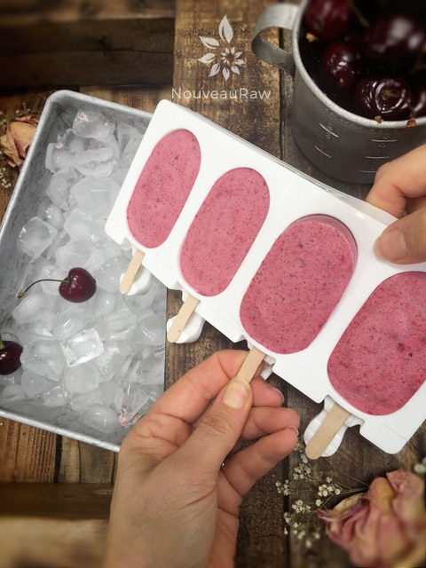

Cherry Coconut Banana Popsicles

~ raw, vegan, gluten-free, nut-free ~
Cherry season is upon us in a fierce way. Meaning… our trees are blessing us with an abundance of plump, red, juicy, Bing cherries. I never thought the day would come when I would have too much fruit on hand to deal with.
Popsicle Success
I want you to achieve “popsicle success.” So let me share a few key things that are important to keep in mind when making this recipe. Always start off with frozen RIPE bananas. Ripe bananas are sweeter and easier on digestion.
Cherries always, always, always, use organic cherries. They are in the top 10 list of produce that requires being organic due to their high absorption of pesticides. And besides being organic, make sure that these too are sweet and ripe. You will end up with a lackluster treat if you use bland, unripe fruit.
I added coconut cream to the recipe because the fat in the coconut cream will give it a smoother and creamier texture. Without it, it will be “icy.” Not saying that’s a bad thing… just different mouth-texture-experiences. You can make your own raw coconut cream, or you can use full-fat canned coconut milk (isn’t raw).
When adding the dried coconut, you can leave it chunky or blend it smooth. I will let you decide. Sometimes a little texture is welcomed.
Now when it comes to popsicle molds, there are many different types that you can use. Have fun and be creative. I provided some links down below for some molds that I like to use. I hope you enjoy this recipe. Please comment below. Blessings, amie sue
Yields 2 pints
- 2 large bananas, sliced and frozen
- 2 cups sliced, organic bing cherries
- 1/2 cup thick coconut cream
- 1/2 cup shredded coconut
- 1/8 tsp Himalayan pink salt
Preparation:
- Place the frozen banana slices, cherries, coconut cream, shredded coconut, and salt in the blender. Process until creamy.
- I left some bits and pieces of the cherries for a nice visual effect.
- Place in popsicle molds and freeze. I often freeze in 3 oz Dixie cups with a popsicle stick inserted, perfect for portion control and young ones.
Freezing Suggestions for Ice Cream:
-
Freeze in popsicle molds or 3 oz Dixie cups with a popsicle stick inserted.
-
-
Store the ice cream in the very back of the freezer, as far away from the door as possible. Every time you open your freezer door you let in warm air. Keeping ice cream way in the back and storing it beneath other frozen-sold items will help protect it from those steamy incursions.
-
Wish to make your own raw ice cream, wonder what machine I might recommend, and more? Click (
here) to check out the Reference Library!

I love this molds. Once frozen you just bend the mold back and slip the popsicle out.
© AmieSue.com